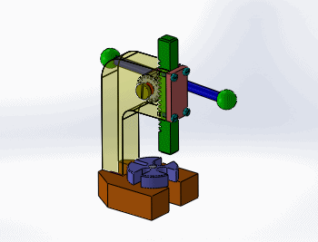

Piñón-cremallera
Consiste en la transmisión de movimiento desde una rueda dentada llamada piñón a otro engranaje rectilíneo (una pieza recta con dientes) llamado cremallera. Los dientes de la cremallera son trapezoidales.

Este es un mecanismo reversible, por lo que funciona de las dos maneras posibles:
- Si el elemento motriz es el piñón, se transforma el movimiento circular del piñón en movimiento lineal de la cremallera.
- Si el elemento motriz es la cremallera, se transforma el movimiento rectilíneo en circular.
Este mecanismo se puede encontrar, por ejemplo:
- en una puerta corredera de garaje (transforma el movimiento de giro del motor en movimiento rectilíneo de la puerta)
- en un taladro de columna, transformando el movimiento circular de la palanca en un movimiento rectilíneo de la base o del propio taladro

- en la dirección de cremallera de un coche:

En realidad, este mecanismo es un caso particular de los engranajes que ya hemos estudiado. La diferencia es que ahora uno de los engranajes no es una rueda sino una pieza recta. Podemos calcular el desplazamiento (avance) y la velocidad de la cremallera en función del módulo (m) o el paso (p) del engranaje con estas expresiones:
Avance de la cremallera (AC)
| \[A_{C}=m\cdot \pi \cdot Z\cdot n'=p\cdot Z\cdot n'\] |
Donde:
- AC: avance de la cremallera, en milímetros (mm)
- m: módulo del engranaje, en milímetros (mm)
- p: paso del engranaje, en milímetros (mm)
- n': número de vueltas que ha dado el piñón
Velocidad de la cremallera (vC)
| \[v_{C}=m\cdot \pi \cdot Z\cdot n=p\cdot Z\cdot n\] |
Donde:
- vC: velocidad de la cremallera, en milímetros por minuto (mm/min)
- m: módulo del engranaje, en milímetros (mm)
- p: paso del engranaje, en milímetros (mm)
- n: régimen de giro del piñón, en rpm
Las principales ventajas de este mecanismo son:
- Es suave y preciso.
- Puede transmitir grandes esfuerzos y potencias elevadas.